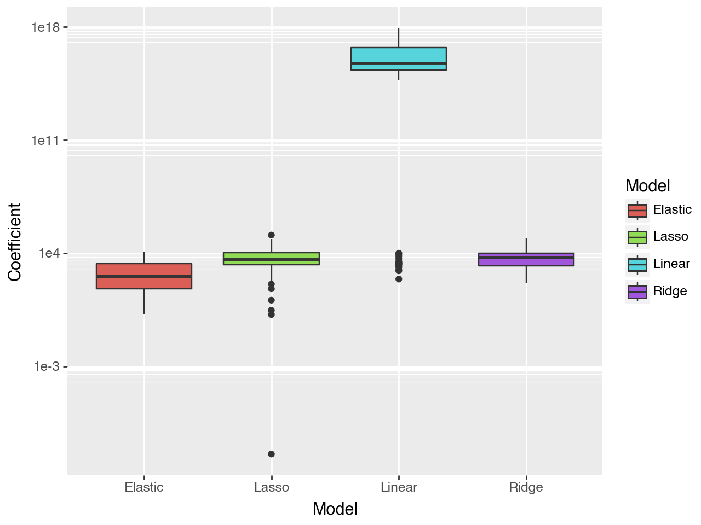

import pandas as pd
import numpy as np
from sklearn.pipeline import Pipeline
from sklearn.compose import make_column_selector, ColumnTransformer
from sklearn.preprocessing import StandardScaler, OneHotEncoder, PolynomialFeatures
from sklearn.linear_model import LinearRegression, Ridge, Lasso, ElasticNet
from sklearn.model_selection import train_test_split, cross_val_score
from sklearn.metrics import r2_score
from sklearn.model_selection import GridSearchCV# Read the data
ames = pd.read_csv("AmesHousing.csv")
# Get rid of columns with mostly NaN values
good_cols = ames.isna().sum() < 100
ames = ames.loc[:,good_cols]
# Drop other NAs
ames = ames.dropna()X = ames.drop(["SalePrice", "Order", "PID"], axis = 1)
y = ames["SalePrice"]
ct = ColumnTransformer(
[
("dummify", OneHotEncoder(sparse_output = False, handle_unknown='ignore'), make_column_selector(dtype_include=object)),
("standardize", StandardScaler(), make_column_selector(dtype_include=np.number))
],
remainder = "passthrough"
)
lr_pipeline = Pipeline(
[("preprocessing", ct),
("linear_regression", LinearRegression())]
)
cross_val_score(lr_pipeline, X, y, cv = 5, scoring = 'r2')array([-1.00227561e+21, -2.13473460e+19, -4.65481157e+21, -4.24892786e+21, -4.16001805e+22])lr_pipeline.fit(X, y)Pipeline(steps=[('preprocessing',
ColumnTransformer(remainder='passthrough',
transformers=[('dummify',
OneHotEncoder(handle_unknown='ignore',
sparse_output=False),
<sklearn.compose._column_transformer.make_column_selector object at 0x157d93f80>),
('standardize',
StandardScaler(),
<sklearn.compose._column_transformer.make_column_selector object at 0x157d93260>)])),
('linear_regression', LinearRegression())])In a Jupyter environment, please rerun this cell to show the HTML representation or trust the notebook. On GitHub, the HTML representation is unable to render, please try loading this page with nbviewer.org.
Pipeline(steps=[('preprocessing',
ColumnTransformer(remainder='passthrough',
transformers=[('dummify',
OneHotEncoder(handle_unknown='ignore',
sparse_output=False),
<sklearn.compose._column_transformer.make_column_selector object at 0x157d93f80>),
('standardize',
StandardScaler(),
<sklearn.compose._column_transformer.make_column_selector object at 0x157d93260>)])),
('linear_regression', LinearRegression())])ColumnTransformer(remainder='passthrough',
transformers=[('dummify',
OneHotEncoder(handle_unknown='ignore',
sparse_output=False),
<sklearn.compose._column_transformer.make_column_selector object at 0x157d93f80>),
('standardize', StandardScaler(),
<sklearn.compose._column_transformer.make_column_selector object at 0x157d93260>)])<sklearn.compose._column_transformer.make_column_selector object at 0x157d93f80>
OneHotEncoder(handle_unknown='ignore', sparse_output=False)
<sklearn.compose._column_transformer.make_column_selector object at 0x157d93260>
StandardScaler()
[]
passthrough
LinearRegression()
ols_coefficents = lr_pipeline.named_steps["linear_regression"].coef_
ols_coefficentsarray([ 5.22832476e+16, 5.22832476e+16, 5.22832476e+16, 5.22832476e+16, 5.22832476e+16, 5.22832476e+16, 7.31784517e+16, 7.31784517e+16,
1.27758001e+17, 1.27758001e+17, 1.27758001e+17, 1.27758001e+17, -1.09897667e+17, -1.09897667e+17, -1.09897667e+17, -1.09897667e+17,
-5.35118184e+15, -5.35118184e+15, -5.35118184e+15, 5.62430416e+16, 5.62430416e+16, 5.62430416e+16, 5.62430416e+16, 5.62430416e+16,
-1.14509554e+16, -1.14509554e+16, -1.14509554e+16, -1.19515150e+17, -1.19515150e+17, -1.19515150e+17, -1.19515150e+17, -1.19515150e+17,
-1.19515150e+17, -1.19515150e+17, -1.19515150e+17, -1.19515150e+17, -1.19515150e+17, -1.19515150e+17, -1.19515150e+17, -1.19515150e+17,
-1.19515150e+17, -1.19515150e+17, -1.19515150e+17, -1.19515150e+17, -1.19515150e+17, -1.19515150e+17, -1.19515150e+17, -1.19515150e+17,
-1.19515150e+17, -1.19515150e+17, -1.19515150e+17, -1.19515150e+17, -1.19515150e+17, -1.19515150e+17, -1.19515150e+17, -1.92034325e+16,
-1.92034325e+16, -1.92034325e+16, -1.92034325e+16, -1.92034325e+16, -1.92034325e+16, -1.92034325e+16, -1.92034325e+16, -1.92034325e+16,
5.74513880e+15, 5.74513880e+15, 5.74513880e+15, 5.74513880e+15, 5.74513880e+15, 5.74513880e+15, 5.74513880e+15, 5.74513880e+15,
3.54970724e+16, 3.54970724e+16, 3.54970724e+16, 3.54970724e+16, 3.54970724e+16, 6.59846179e+16, 6.59846179e+16, 6.59846179e+16,
6.59846179e+16, 6.59846179e+16, 6.59846179e+16, 6.59846179e+16, 6.59846179e+16, -2.22001848e+15, -2.22001848e+15, -2.22001848e+15,
-2.22001848e+15, -2.22001848e+15, -2.22001848e+15, 5.41821636e+15, 5.41821636e+15, 5.41821636e+15, 5.41821636e+15, 5.41821636e+15,
5.41821636e+15, 5.41821636e+15, 5.41821636e+15, -1.70025049e+17, -1.70025049e+17, -1.70025049e+17, -1.70025049e+17, -7.61567645e+16,
-1.70025049e+17, -1.70025049e+17, -1.70025049e+17, -1.70025049e+17, -1.70025049e+17, -1.14361795e+17, -1.70025049e+17, -1.70025049e+17,
-1.70025049e+17, -1.70025049e+17, -1.70025049e+17, -2.68872870e+16, -2.68872870e+16, -2.68872870e+16, -2.68872870e+16, -1.20755571e+17,
-2.68872870e+16, -2.68872870e+16, -2.68872870e+16, -2.68872870e+16, -2.68872870e+16, -2.68872870e+16, -8.25505409e+16, -2.68872870e+16,
-2.68872870e+16, -2.68872870e+16, -2.68872870e+16, -2.68872870e+16, 6.66949901e+16, 6.66949901e+16, 6.66949901e+16, 6.66949901e+16,
-4.04057562e+16, -4.04057562e+16, -4.04057562e+16, -4.04057562e+16, -4.04057562e+16, 5.73172126e+15, 5.73172126e+15, 5.73172126e+15,
5.73172126e+15, 5.73172126e+15, 5.23903707e+14, 5.23903707e+14, 5.23903707e+14, 5.23903707e+14, 5.23903707e+14, -3.41180372e+16,
-3.41180372e+16, -3.41180372e+16, -3.41180372e+16, -3.41180372e+16, 3.15582552e+16, 3.15582552e+16, 3.15582552e+16, 3.15582552e+16,
3.86437780e+16, 3.86437780e+16, 3.86437780e+16, 3.86437780e+16, 3.86437780e+16, 3.86437780e+16, 2.74065510e+15, 2.74065510e+15,
2.74065510e+15, 2.74065510e+15, 2.74065510e+15, 2.74065510e+15, -4.05551446e+15, -4.05551446e+15, -4.05551446e+15, -4.05551446e+15,
-1.36629225e+16, -1.36629225e+16, -1.36629225e+16, -1.36629225e+16, -1.36629225e+16, 4.54647978e+15, 4.54647978e+15, -1.13063888e+16,
-1.13063888e+16, -1.13063888e+16, -1.13063888e+16, -1.13063888e+16, -3.08763308e+16, -3.08763308e+16, -3.08763308e+16, -3.08763308e+16,
-3.08763308e+16, 2.17976190e+15, 2.17976190e+15, 2.17976190e+15, 2.17976190e+15, 2.17976190e+15, 2.17976190e+15, 2.17976190e+15,
2.17976190e+15, 3.60100011e+16, 3.60100011e+16, 3.60100011e+16, -3.23497681e+15, -3.23497681e+15, -3.23497681e+15, -3.23497681e+15,
-3.23497681e+15, -3.23497681e+15, -3.23497681e+15, -3.23497681e+15, -3.23497681e+15, -3.23497681e+15, -5.56260774e+16, -5.56260774e+16,
-5.56260774e+16, -5.56260774e+16, -5.56260774e+16, -5.56260774e+16, -3.24000000e+03, 4.57600000e+03, 9.93600000e+03, 6.39200000e+03,
8.86400000e+03, 1.64800000e+03, 2.24000000e+03, -1.03384428e+17, -3.90171287e+16, -9.86472356e+16, 9.25781814e+16, -6.32409160e+17,
-6.96073871e+17, -7.63850981e+16, 8.20053698e+17, 9.28000000e+02, -1.12000000e+03, 2.17600000e+03, 1.34400000e+03, -2.20800000e+03,
-2.11200000e+03, -6.00000000e+00, 2.27200000e+03, 1.95200000e+03, 3.05600000e+03, 8.08000000e+02, -8.16000000e+02, 2.48000000e+02,
-4.80000000e+01, 2.55600000e+03, 2.75200000e+03, -5.22400000e+03, -7.36000000e+02, -5.72000000e+02])X = ames.drop(["SalePrice", "Order", "PID"], axis = 1)
y = ames["SalePrice"]
ct = ColumnTransformer(
[
("dummify", OneHotEncoder(sparse_output = False, handle_unknown='ignore'), make_column_selector(dtype_include=object)),
("standardize", StandardScaler(), make_column_selector(dtype_include=np.number))
],
remainder = "passthrough"
)
ridge_pipeline = Pipeline(
[("preprocessing", ct),
("ridge", Ridge(alpha = 1))]
)
cross_val_score(ridge_pipeline, X, y, cv = 5, scoring = 'r2')array([0.89815807, 0.91744024, 0.79493606, 0.78522563, 0.91389818])alphas = {'ridge__alpha': [0.001,0.01,0.1,1,10]}
gscv = GridSearchCV(ridge_pipeline, alphas, cv = 5, scoring='r2')gscv_fitted = gscv.fit(X, y)
gscv_fitted.cv_results_{'mean_fit_time': array([0.03918695, 0.0490118 , 0.06046181, 0.06802077, 0.05308576]),
'std_fit_time': array([0.00503426, 0.01078988, 0.01496868, 0.01582698, 0.0073313 ]),
'mean_score_time': array([0.01399946, 0.01568484, 0.01975713, 0.02071929, 0.01684818]),
'std_score_time': array([0.00433184, 0.00293952, 0.00377094, 0.00834325, 0.00193466]),
'param_ridge__alpha': masked_array(data=[0.001, 0.01, 0.1, 1, 10],
mask=[False, False, False, False, False],
fill_value='?',
dtype=object),
'params': [{'ridge__alpha': 0.001},
{'ridge__alpha': 0.01},
{'ridge__alpha': 0.1},
{'ridge__alpha': 1},
{'ridge__alpha': 10}],
'split0_test_score': array([0.8972854 , 0.89734306, 0.89774358, 0.89815807, 0.8977621 ]),
'split1_test_score': array([0.91040618, 0.91061417, 0.91230557, 0.91744024, 0.92081211]),
'split2_test_score': array([0.78901601, 0.7891259 , 0.79010977, 0.79493606, 0.80057243]),
'split3_test_score': array([0.7721318 , 0.77253192, 0.77576412, 0.78522563, 0.78711955]),
'split4_test_score': array([0.90076168, 0.90131686, 0.90558729, 0.91389818, 0.91509487]),
'mean_test_score': array([0.85392021, 0.85418638, 0.85630206, 0.86193163, 0.86427221]),
'std_test_score': array([0.06027807, 0.06027967, 0.06025049, 0.05910381, 0.0581575 ]),
'rank_test_score': array([5, 4, 3, 2, 1], dtype=int32)}gscv_fitted.cv_results_['mean_test_score']array([0.85392021, 0.85418638, 0.85630206, 0.86193163, 0.86427221])pd.DataFrame(data = {"alphas": [0.001, 0.01, 0.1, 1, 10], "scores": gscv_fitted.cv_results_['mean_test_score']})| alphas | scores | |
|---|---|---|
| 0 | 0.001 | 0.853920 |
| 1 | 0.010 | 0.854186 |
| 2 | 0.100 | 0.856302 |
| 3 | 1.000 | 0.861932 |
| 4 | 10.000 | 0.864272 |
ridge_pipeline.fit(X, y)Pipeline(steps=[('preprocessing',
ColumnTransformer(remainder='passthrough',
transformers=[('dummify',
OneHotEncoder(handle_unknown='ignore',
sparse_output=False),
<sklearn.compose._column_transformer.make_column_selector object at 0x157d8cf50>),
('standardize',
StandardScaler(),
<sklearn.compose._column_transformer.make_column_selector object at 0x157d8ea20>)])),
('ridge', Ridge(alpha=1))])In a Jupyter environment, please rerun this cell to show the HTML representation or trust the notebook. On GitHub, the HTML representation is unable to render, please try loading this page with nbviewer.org.
Pipeline(steps=[('preprocessing',
ColumnTransformer(remainder='passthrough',
transformers=[('dummify',
OneHotEncoder(handle_unknown='ignore',
sparse_output=False),
<sklearn.compose._column_transformer.make_column_selector object at 0x157d8cf50>),
('standardize',
StandardScaler(),
<sklearn.compose._column_transformer.make_column_selector object at 0x157d8ea20>)])),
('ridge', Ridge(alpha=1))])ColumnTransformer(remainder='passthrough',
transformers=[('dummify',
OneHotEncoder(handle_unknown='ignore',
sparse_output=False),
<sklearn.compose._column_transformer.make_column_selector object at 0x157d8cf50>),
('standardize', StandardScaler(),
<sklearn.compose._column_transformer.make_column_selector object at 0x157d8ea20>)])<sklearn.compose._column_transformer.make_column_selector object at 0x157d8cf50>
OneHotEncoder(handle_unknown='ignore', sparse_output=False)
<sklearn.compose._column_transformer.make_column_selector object at 0x157d8ea20>
StandardScaler()
[]
passthrough
Ridge(alpha=1)
ridge_coefficents = ridge_pipeline.named_steps["ridge"].coef_
ridge_coefficentsarray([-5.58514707e+03, 1.27959973e+03, -5.46571776e+03, 7.87614164e+03, 3.04609538e+03, -1.15097192e+03, -9.33396395e+03, 9.33396395e+03,
1.22549207e+03, 7.29888520e+03, -1.08647168e+04, 2.34033949e+03, -8.75436678e+03, 9.01003491e+03, -3.97712861e+03, 3.72146049e+03,
9.41980874e+03, -8.79255885e+03, -6.27249885e+02, 8.17535896e+02, 8.01641445e+03, -5.69763865e+03, -3.98756032e+03, 8.51248627e+02,
8.79698364e+02, 7.61644748e+03, -8.49614584e+03, -3.15970613e+03, 4.27236551e+03, 7.88847839e+03, -5.86113592e+03, -9.15806934e+03,
-1.14550380e+04, 6.03134279e+03, -2.05039767e+04, -1.35486631e+04, 5.21751589e+03, 6.65306858e+04, -1.21001139e+04, -2.25857464e+03,
8.65313918e+02, -1.52143284e+04, -1.58503469e+04, 9.55308503e+03, -1.82636881e+04, 2.78380350e+04, 2.24166992e+04, -1.59147424e+04,
-1.30475803e+04, -1.14575200e+04, -1.24710470e+04, 1.07458866e+04, 3.69996740e+04, -8.28754419e+03, -9.80700715e+03, -2.58169293e+03,
-3.02692451e+03, 6.63253628e+03, 7.69143058e+03, 1.16940109e+04, -6.49024359e+03, 8.62421788e+02, -6.20780198e+03, -8.57373654e+03,
2.80005992e+03, -2.63455908e+03, -2.06897104e+02, 4.71807982e+04, -7.79961603e+04, 2.45675278e+04, 3.23893356e+03, 3.05029700e+03,
9.94889008e+03, 1.10548935e+04, 1.67560700e+03, -1.46979149e+04, -7.98147559e+03, -1.79890791e+03, 7.41344707e+03, 8.02133267e+03,
-1.16328278e+04, -1.73323258e+03, -6.75694405e+03, 6.78613158e+03, -2.98999010e+02, -6.39963577e+03, 3.46522085e+03, 3.71728516e+03,
5.27141699e+03, -5.53635608e+03, -5.17931153e+02, -2.33156090e+05, 2.68022636e+04, 3.25825529e+04, 2.83876632e+04, 1.68285051e+04,
2.47157179e+04, 1.99292056e+04, 8.39101814e+04, -3.70239623e+02, 4.11714375e+03, 8.46002159e+03, 1.83423418e+04, -3.72021563e+03,
-3.39149681e+03, -6.49736049e+03, -1.66332210e+04, -2.22606724e+02, -2.56972785e+03, 2.57086468e+04, -3.35058128e+03, -5.94692967e+03,
-8.62650450e+03, -1.86440691e+03, -3.43486347e+03, -4.45222742e+03, 9.35494285e+03, -2.93175877e+03, -8.61537743e+03, -3.72021563e+03,
-1.26685093e+01, 5.42192638e+02, 9.36904181e+03, -9.56540698e+02, -6.82640354e+03, -2.15434900e+03, 2.57086468e+04, -1.31646646e+04,
-3.07891524e+03, 6.01308638e+03, -2.18035830e+03, -2.89443137e+03, 1.59107162e+04, -5.37609161e+02, -6.48465255e+03, -8.88845450e+03,
-1.74068160e+03, -3.05038126e+03, 2.40031889e+03, -4.38246212e+02, 2.82899019e+03, -2.12957327e+03, -8.95900442e+02, 1.60903903e+03,
9.80715820e+03, -8.39072351e+03, 1.46941938e+04, -1.91876144e+03, -4.93583881e+03, -3.88253800e+03, -3.95705558e+03, -4.96415244e+03,
7.44385735e+02, -1.45228897e+03, 6.01035774e+03, -3.38302056e+02, 1.28589333e+03, 1.16013166e+04, -6.42951184e+03, -6.45769808e+03,
1.15981859e+03, -8.87898664e+00, 4.36459924e+03, -4.17737755e+03, -1.85915167e+03, 5.20990382e+02, 5.16298328e+03, -3.67485338e+03,
7.33383151e+03, -5.49060963e+03, -3.90462968e+03, 5.73277894e+02, 6.76159977e+03, 7.05676565e+03, 5.00112272e+03, -1.88194881e+04,
4.25746680e+03, -8.08538869e+02, 2.39174260e+03, -6.94919292e+03, 1.10852238e+03, 1.32123531e+03, -1.32123531e+03, -4.40461123e+02,
-2.61111284e+03, 1.64613871e+02, 3.72473346e+03, -8.37773362e+02, 1.56065050e+04, -7.90661987e+03, -7.17994624e+03, 7.49550774e+03,
-8.01544666e+03, 4.69537337e+02, -9.91422140e+03, 5.47418701e+03, 5.49070462e+03, 1.15454098e+03, -1.87971033e+03, -1.41865394e+04,
1.33915012e+04, 4.40631678e+02, -9.29652595e+02, 4.89020918e+02, -8.30542010e+03, -7.57181698e+02, 2.12934404e+04, 2.53152225e+03,
-4.99834074e+03, -3.93860315e+03, 4.00432118e+03, -1.14056166e+02, -5.30595226e+03, -4.40972972e+03, -7.60290270e+03, 1.11229619e+04,
4.07138370e+03, -6.13968665e+03, -4.74287687e+02, -9.77468592e+02, -3.60647471e+03, 3.98690951e+03, 1.09114633e+04, 5.95548108e+03,
7.44771268e+03, 1.71376543e+03, 2.28271388e+03, 4.51487038e+03, 1.59978190e+03, -1.58940335e+03, 4.02250224e+03, 6.93945313e+03,
1.26580640e+04, 5.28642741e+02, 1.61451644e+04, 1.71983414e+03, -7.00248635e+02, 2.66406794e+03, 1.56375956e+03, -1.88085944e+03,
-2.13607627e+03, 7.16800402e+02, 2.66437096e+03, 3.65280140e+03, 1.68038800e+03, 8.81728247e+02, -8.29602812e+02, 5.93135059e+02,
1.39775751e+02, 2.91367120e+03, 1.41514583e+03, -4.40940640e+03, -7.24796932e+02, -8.41075769e+02])X = ames.drop(["SalePrice", "Order", "PID"], axis = 1)
y = ames["SalePrice"]
ct = ColumnTransformer(
[
("dummify", OneHotEncoder(sparse_output = False, handle_unknown='ignore'), make_column_selector(dtype_include=object)),
("standardize", StandardScaler(), make_column_selector(dtype_include=np.number))
],
remainder = "passthrough"
)
lasso_pipeline = Pipeline(
[("preprocessing", ct),
("lasso", Lasso(alpha = 1))]
)
cross_val_score(lasso_pipeline, X, y, cv = 5, scoring = 'r2')/opt/anaconda3/lib/python3.12/site-packages/sklearn/linear_model/_coordinate_descent.py:678: ConvergenceWarning: Objective did not converge. You might want to increase the number of iterations, check the scale of the features or consider increasing regularisation. Duality gap: 2.323e+10, tolerance: 1.477e+09
model = cd_fast.enet_coordinate_descent(array([0.89774385, 0.91093785, 0.79691806, 0.77426245, 0.90589888])alphas = {'lasso__alpha': [0.001,0.01,0.1,1,10]}
gscv = GridSearchCV(lasso_pipeline, alphas, cv = 5, scoring='r2')
gscv_fitted = gscv.fit(X, y)
gscv_fitted.cv_results_/opt/anaconda3/lib/python3.12/site-packages/sklearn/linear_model/_coordinate_descent.py:678: ConvergenceWarning: Objective did not converge. You might want to increase the number of iterations, check the scale of the features or consider increasing regularisation. Duality gap: 2.109e+11, tolerance: 1.348e+09
model = cd_fast.enet_coordinate_descent(
/opt/anaconda3/lib/python3.12/site-packages/sklearn/linear_model/_coordinate_descent.py:678: ConvergenceWarning: Objective did not converge. You might want to increase the number of iterations, check the scale of the features or consider increasing regularisation. Duality gap: 2.466e+11, tolerance: 1.474e+09
model = cd_fast.enet_coordinate_descent(
/opt/anaconda3/lib/python3.12/site-packages/sklearn/linear_model/_coordinate_descent.py:678: ConvergenceWarning: Objective did not converge. You might want to increase the number of iterations, check the scale of the features or consider increasing regularisation. Duality gap: 1.894e+11, tolerance: 1.463e+09
model = cd_fast.enet_coordinate_descent(
/opt/anaconda3/lib/python3.12/site-packages/sklearn/linear_model/_coordinate_descent.py:678: ConvergenceWarning: Objective did not converge. You might want to increase the number of iterations, check the scale of the features or consider increasing regularisation. Duality gap: 1.756e+11, tolerance: 1.407e+09
model = cd_fast.enet_coordinate_descent(
/opt/anaconda3/lib/python3.12/site-packages/sklearn/linear_model/_coordinate_descent.py:678: ConvergenceWarning: Objective did not converge. You might want to increase the number of iterations, check the scale of the features or consider increasing regularisation. Duality gap: 2.569e+11, tolerance: 1.477e+09
model = cd_fast.enet_coordinate_descent(
/opt/anaconda3/lib/python3.12/site-packages/sklearn/linear_model/_coordinate_descent.py:678: ConvergenceWarning: Objective did not converge. You might want to increase the number of iterations, check the scale of the features or consider increasing regularisation. Duality gap: 2.110e+11, tolerance: 1.348e+09
model = cd_fast.enet_coordinate_descent(
/opt/anaconda3/lib/python3.12/site-packages/sklearn/linear_model/_coordinate_descent.py:678: ConvergenceWarning: Objective did not converge. You might want to increase the number of iterations, check the scale of the features or consider increasing regularisation. Duality gap: 2.466e+11, tolerance: 1.474e+09
model = cd_fast.enet_coordinate_descent(
/opt/anaconda3/lib/python3.12/site-packages/sklearn/linear_model/_coordinate_descent.py:678: ConvergenceWarning: Objective did not converge. You might want to increase the number of iterations, check the scale of the features or consider increasing regularisation. Duality gap: 1.988e+11, tolerance: 1.463e+09
model = cd_fast.enet_coordinate_descent(
/opt/anaconda3/lib/python3.12/site-packages/sklearn/linear_model/_coordinate_descent.py:678: ConvergenceWarning: Objective did not converge. You might want to increase the number of iterations, check the scale of the features or consider increasing regularisation. Duality gap: 1.757e+11, tolerance: 1.407e+09
model = cd_fast.enet_coordinate_descent(
/opt/anaconda3/lib/python3.12/site-packages/sklearn/linear_model/_coordinate_descent.py:678: ConvergenceWarning: Objective did not converge. You might want to increase the number of iterations, check the scale of the features or consider increasing regularisation. Duality gap: 2.456e+11, tolerance: 1.477e+09
model = cd_fast.enet_coordinate_descent(
/opt/anaconda3/lib/python3.12/site-packages/sklearn/linear_model/_coordinate_descent.py:678: ConvergenceWarning: Objective did not converge. You might want to increase the number of iterations, check the scale of the features or consider increasing regularisation. Duality gap: 2.236e+11, tolerance: 1.348e+09
model = cd_fast.enet_coordinate_descent(
/opt/anaconda3/lib/python3.12/site-packages/sklearn/linear_model/_coordinate_descent.py:678: ConvergenceWarning: Objective did not converge. You might want to increase the number of iterations, check the scale of the features or consider increasing regularisation. Duality gap: 1.570e+11, tolerance: 1.474e+09
model = cd_fast.enet_coordinate_descent(
/opt/anaconda3/lib/python3.12/site-packages/sklearn/linear_model/_coordinate_descent.py:678: ConvergenceWarning: Objective did not converge. You might want to increase the number of iterations, check the scale of the features or consider increasing regularisation. Duality gap: 1.588e+11, tolerance: 1.463e+09
model = cd_fast.enet_coordinate_descent(
/opt/anaconda3/lib/python3.12/site-packages/sklearn/linear_model/_coordinate_descent.py:678: ConvergenceWarning: Objective did not converge. You might want to increase the number of iterations, check the scale of the features or consider increasing regularisation. Duality gap: 1.698e+11, tolerance: 1.407e+09
model = cd_fast.enet_coordinate_descent(
/opt/anaconda3/lib/python3.12/site-packages/sklearn/linear_model/_coordinate_descent.py:678: ConvergenceWarning: Objective did not converge. You might want to increase the number of iterations, check the scale of the features or consider increasing regularisation. Duality gap: 2.557e+11, tolerance: 1.477e+09
model = cd_fast.enet_coordinate_descent(
/opt/anaconda3/lib/python3.12/site-packages/sklearn/linear_model/_coordinate_descent.py:678: ConvergenceWarning: Objective did not converge. You might want to increase the number of iterations, check the scale of the features or consider increasing regularisation. Duality gap: 2.323e+10, tolerance: 1.477e+09
model = cd_fast.enet_coordinate_descent({'mean_fit_time': array([1.57969837, 1.87584567, 1.74486418, 1.50985532, 0.338873 ]),
'std_fit_time': array([0.30702686, 0.26028048, 0.46695742, 0.20058649, 0.17265138]),
'mean_score_time': array([0.01987157, 0.06412044, 0.01854324, 0.022576 , 0.01384463]),
'std_score_time': array([0.00301726, 0.08952167, 0.00284108, 0.0034486 , 0.00239836]),
'param_lasso__alpha': masked_array(data=[0.001, 0.01, 0.1, 1, 10],
mask=[False, False, False, False, False],
fill_value='?',
dtype=object),
'params': [{'lasso__alpha': 0.001},
{'lasso__alpha': 0.01},
{'lasso__alpha': 0.1},
{'lasso__alpha': 1},
{'lasso__alpha': 10}],
'split0_test_score': array([0.8972019 , 0.89720561, 0.89725821, 0.89774385, 0.90077569]),
'split1_test_score': array([0.9103958 , 0.91040134, 0.91045103, 0.91093785, 0.91506699]),
'split2_test_score': array([0.79032004, 0.79085941, 0.79595065, 0.79691806, 0.80141962]),
'split3_test_score': array([0.77402031, 0.77406031, 0.77407171, 0.77426245, 0.77664916]),
'split4_test_score': array([0.90555653, 0.90550225, 0.90535981, 0.90589888, 0.90924976]),
'mean_test_score': array([0.85549892, 0.85560578, 0.85661828, 0.85715222, 0.86063224]),
'std_test_score': array([0.06024221, 0.06010743, 0.05902508, 0.0590181 , 0.05915673]),
'rank_test_score': array([5, 4, 3, 2, 1], dtype=int32)}gscv_fitted.cv_results_['mean_test_score']array([0.85549892, 0.85560578, 0.85661828, 0.85715222, 0.86063224])pd.DataFrame(data = {"alphas": [0.001, 0.01, 0.1, 1, 10], "scores": gscv_fitted.cv_results_['mean_test_score']})| alphas | scores | |
|---|---|---|
| 0 | 0.001 | 0.855499 |
| 1 | 0.010 | 0.855606 |
| 2 | 0.100 | 0.856618 |
| 3 | 1.000 | 0.857152 |
| 4 | 10.000 | 0.860632 |
lasso_pipeline.fit(X,y)Pipeline(steps=[('preprocessing',
ColumnTransformer(remainder='passthrough',
transformers=[('dummify',
OneHotEncoder(handle_unknown='ignore',
sparse_output=False),
<sklearn.compose._column_transformer.make_column_selector object at 0x16809f6e0>),
('standardize',
StandardScaler(),
<sklearn.compose._column_transformer.make_column_selector object at 0x17fca02c0>)])),
('lasso', Lasso(alpha=1))])In a Jupyter environment, please rerun this cell to show the HTML representation or trust the notebook. On GitHub, the HTML representation is unable to render, please try loading this page with nbviewer.org.
Pipeline(steps=[('preprocessing',
ColumnTransformer(remainder='passthrough',
transformers=[('dummify',
OneHotEncoder(handle_unknown='ignore',
sparse_output=False),
<sklearn.compose._column_transformer.make_column_selector object at 0x16809f6e0>),
('standardize',
StandardScaler(),
<sklearn.compose._column_transformer.make_column_selector object at 0x17fca02c0>)])),
('lasso', Lasso(alpha=1))])ColumnTransformer(remainder='passthrough',
transformers=[('dummify',
OneHotEncoder(handle_unknown='ignore',
sparse_output=False),
<sklearn.compose._column_transformer.make_column_selector object at 0x16809f6e0>),
('standardize', StandardScaler(),
<sklearn.compose._column_transformer.make_column_selector object at 0x17fca02c0>)])<sklearn.compose._column_transformer.make_column_selector object at 0x16809f6e0>
OneHotEncoder(handle_unknown='ignore', sparse_output=False)
<sklearn.compose._column_transformer.make_column_selector object at 0x17fca02c0>
StandardScaler()
[]
passthrough
Lasso(alpha=1)
lasso_coefficents = lasso_pipeline.named_steps["lasso"].coef_
lasso_coefficentsarray([-4.81652839e+03, 1.22724439e+03, -4.41885541e+03, 7.51982576e+03, 3.53293929e+03, -1.15175663e+03, -2.04473222e+04, 3.67205820e-09,
-1.41031927e+03, 4.70209827e+03, 4.83124102e+02, -1.26904092e+01, -9.03194952e+03, 5.48345937e+03, -1.09548228e+04, 1.19715987e+02,
1.48059948e+04, -2.46716222e+03, 0.00000000e+00, 2.89970113e+02, 6.47083982e+03, -6.06559741e+03, -4.80860054e+03, -0.00000000e+00,
-0.00000000e+00, 6.66914878e+03, -1.63491350e+04, 3.88720104e+03, 1.02876243e+04, 1.35648346e+04, 1.05643345e+03, -4.16387582e+03,
-6.38723226e+03, 1.16048567e+04, -1.37388021e+04, -7.33924495e+03, 1.20934300e+04, 1.32015734e+05, -5.39197495e+03, 0.00000000e+00,
7.56702466e+03, -1.01640833e+04, -1.01751839e+04, 1.84286710e+04, -1.33019305e+04, 3.10914289e+04, 2.52024813e+04, -9.36511398e+03,
-7.37390650e+03, -5.84233241e+03, -7.33009072e+03, 1.60093014e+04, 4.27819615e+04, -4.11202868e+03, -7.19672101e+03, -2.09327946e+03,
-0.00000000e+00, 8.09540209e+03, 6.61843072e+03, 1.43357981e+04, -4.58176549e+03, 1.03135473e+03, -4.12604862e+03, -8.12167463e+03,
-0.00000000e+00, -6.59905050e+03, -1.58372646e+03, 5.68394823e+04, -1.11624851e+05, 6.08788556e+04, 0.00000000e+00, 8.50667897e+02,
1.03935549e+04, 9.61407049e+03, 0.00000000e+00, -1.42052812e+04, -7.47698607e+03, -6.03037846e+02, 8.52567088e+03, 7.97594651e+03,
-1.19824048e+04, -6.45663917e+02, -3.84185182e+03, 8.05651368e+03, 1.61932653e+03, -2.63044593e+04, 5.80366944e+02, 2.90897395e+00,
2.27120099e+03, -9.20432205e+03, -9.00651004e+03, -6.14586360e+05, -1.15721615e+04, 5.41088616e+04, 4.38271086e+04, -9.87398326e+02,
1.23139306e+01, -1.16567966e+04, 5.88307236e+04, 3.77148940e+03, 6.79415667e+03, 1.03235690e+04, 2.26596245e+04, -2.21161621e+02,
-2.08450913e+03, -2.82232092e+03, -2.72608892e+04, 3.62350428e+03, -5.69219133e+02, 7.61673057e+04, -0.00000000e+00, 2.43584331e+03,
-5.34618297e+03, 2.05212288e+03, -4.09633512e+02, -3.03709970e+03, 1.66565853e+04, -2.71811549e+03, -8.97549546e+03, -1.97137881e+03,
2.02781043e+03, 2.24796100e+03, 1.04920463e+04, 6.76661208e+02, -1.25470262e+04, -0.00000000e+00, 6.23765038e+02, -1.62218812e+04,
2.30986954e+03, 8.00424955e+03, -3.45792064e+02, -0.00000000e+00, 2.46452590e+04, 6.86505663e+03, -9.18528371e-02, -1.68303733e+03,
-5.44149274e+03, -6.14941053e+03, 1.69374669e+02, -0.00000000e+00, 4.86279119e+02, -7.35914285e+02, -0.00000000e+00, 2.30833905e+03,
1.19455454e+04, -1.00710531e+04, 1.73094763e+04, 2.06133391e+03, -1.37317323e+03, -1.53352476e+03, 0.00000000e+00, -5.77384031e+03,
1.21735344e+03, -3.65328230e+02, 1.03353025e+04, 0.00000000e+00, 6.15784021e+03, 1.64066327e+04, -8.81028100e+02, -1.05140108e+03,
1.58855578e+00, -7.74092104e+02, 3.45770638e+03, -4.52797192e+03, -2.82965790e+03, 2.04558196e+03, 3.98205677e+03, -4.04628376e+03,
7.97892770e+03, -6.89457710e+03, -4.88540553e+03, 2.23966508e+02, 1.63967443e+03, -0.00000000e+00, 0.00000000e+00, -2.85121698e+04,
3.04954536e+03, -1.73482500e+03, 1.18773692e+03, -5.00293658e+03, -0.00000000e+00, 3.00003250e+03, -2.77391757e-12, 3.40007035e+02,
-2.87549774e+03, -9.97138680e+02, 2.89899740e+03, -0.00000000e+00, 2.24288270e+04, -3.85757145e+02, 0.00000000e+00, 2.64309771e+04,
-4.56729982e+02, 0.00000000e+00, -9.56722843e+03, 5.95169199e+03, 5.53860911e+03, -1.65409956e+03, -0.00000000e+00, -2.01874519e+04,
1.36445048e+04, 2.00079181e+02, -1.14257116e+03, -0.00000000e+00, -5.41358213e+03, 3.37521648e+03, 2.71056927e+04, 5.12541836e+03,
-2.43479368e+03, -6.52402633e+00, 8.16575338e+03, 2.03550663e+03, -5.46045162e+03, -1.64213959e+03, -6.65265922e+03, 1.54538118e+04,
2.37763400e+03, -5.13058857e+03, 4.51518613e+02, -3.92967200e+02, -3.10287820e+03, 4.59087714e+03, 1.01106862e+04, 6.37226676e+03,
8.77048517e+03, 1.76520292e+03, 2.26405839e+03, 1.06900163e+04, 3.48090439e+03, 2.20721657e+03, 3.17509922e+03, 1.56530426e+04,
2.30736144e+04, 1.51517256e+03, 5.01815210e+03, 1.01380463e+03, -9.89209245e+02, 2.17351311e+03, 1.21782441e+03, -2.19807493e+03,
-2.12807902e+03, 6.24154122e+01, 2.30653060e+03, 2.02769030e+03, 3.12514551e+03, 7.15197115e+02, -7.73367308e+02, 3.09843027e+02,
0.00000000e+00, 2.66180501e+03, 2.75415865e+03, -5.10865997e+03, -7.74503204e+02, -6.18548189e+02])X = ames.drop(["SalePrice", "Order", "PID"], axis = 1)
y = ames["SalePrice"]
ct = ColumnTransformer(
[
("dummify", OneHotEncoder(sparse_output = False, handle_unknown='ignore'), make_column_selector(dtype_include=object)),
("standardize", StandardScaler(), make_column_selector(dtype_include=np.number))
],
remainder = "passthrough"
)
elastic_net_pipeline = Pipeline(
[("preprocessing", ct),
("elastic_net", ElasticNet(alpha = 1, l1_ratio = 0.5))]
)
cross_val_score(elastic_net_pipeline, X, y, cv = 5, scoring = 'r2')array([0.84843362, 0.89484602, 0.78295991, 0.74618167, 0.88108029])param_grid = {
'elastic_net__alpha': [0.001,0.01,0.1,1,10],
'elastic_net__l1_ratio': [0.10,0.25,0.5,0.75,0.90]}
gscv = GridSearchCV(elastic_net_pipeline, param_grid, cv = 5, scoring='r2')
gscv_fitted = gscv.fit(X, y)
gscv_fitted.cv_results_/opt/anaconda3/lib/python3.12/site-packages/sklearn/linear_model/_coordinate_descent.py:678: ConvergenceWarning: Objective did not converge. You might want to increase the number of iterations, check the scale of the features or consider increasing regularisation. Duality gap: 6.466e+11, tolerance: 1.348e+09
model = cd_fast.enet_coordinate_descent(
/opt/anaconda3/lib/python3.12/site-packages/sklearn/linear_model/_coordinate_descent.py:678: ConvergenceWarning: Objective did not converge. You might want to increase the number of iterations, check the scale of the features or consider increasing regularisation. Duality gap: 7.259e+11, tolerance: 1.474e+09
model = cd_fast.enet_coordinate_descent(
/opt/anaconda3/lib/python3.12/site-packages/sklearn/linear_model/_coordinate_descent.py:678: ConvergenceWarning: Objective did not converge. You might want to increase the number of iterations, check the scale of the features or consider increasing regularisation. Duality gap: 6.122e+11, tolerance: 1.463e+09
model = cd_fast.enet_coordinate_descent(
/opt/anaconda3/lib/python3.12/site-packages/sklearn/linear_model/_coordinate_descent.py:678: ConvergenceWarning: Objective did not converge. You might want to increase the number of iterations, check the scale of the features or consider increasing regularisation. Duality gap: 5.353e+11, tolerance: 1.407e+09
model = cd_fast.enet_coordinate_descent(
/opt/anaconda3/lib/python3.12/site-packages/sklearn/linear_model/_coordinate_descent.py:678: ConvergenceWarning: Objective did not converge. You might want to increase the number of iterations, check the scale of the features or consider increasing regularisation. Duality gap: 7.237e+11, tolerance: 1.477e+09
model = cd_fast.enet_coordinate_descent(
/opt/anaconda3/lib/python3.12/site-packages/sklearn/linear_model/_coordinate_descent.py:678: ConvergenceWarning: Objective did not converge. You might want to increase the number of iterations, check the scale of the features or consider increasing regularisation. Duality gap: 6.380e+11, tolerance: 1.348e+09
model = cd_fast.enet_coordinate_descent(
/opt/anaconda3/lib/python3.12/site-packages/sklearn/linear_model/_coordinate_descent.py:678: ConvergenceWarning: Objective did not converge. You might want to increase the number of iterations, check the scale of the features or consider increasing regularisation. Duality gap: 7.170e+11, tolerance: 1.474e+09
model = cd_fast.enet_coordinate_descent(
/opt/anaconda3/lib/python3.12/site-packages/sklearn/linear_model/_coordinate_descent.py:678: ConvergenceWarning: Objective did not converge. You might want to increase the number of iterations, check the scale of the features or consider increasing regularisation. Duality gap: 6.082e+11, tolerance: 1.463e+09
model = cd_fast.enet_coordinate_descent(
/opt/anaconda3/lib/python3.12/site-packages/sklearn/linear_model/_coordinate_descent.py:678: ConvergenceWarning: Objective did not converge. You might want to increase the number of iterations, check the scale of the features or consider increasing regularisation. Duality gap: 5.278e+11, tolerance: 1.407e+09
model = cd_fast.enet_coordinate_descent(
/opt/anaconda3/lib/python3.12/site-packages/sklearn/linear_model/_coordinate_descent.py:678: ConvergenceWarning: Objective did not converge. You might want to increase the number of iterations, check the scale of the features or consider increasing regularisation. Duality gap: 7.151e+11, tolerance: 1.477e+09
model = cd_fast.enet_coordinate_descent(
/opt/anaconda3/lib/python3.12/site-packages/sklearn/linear_model/_coordinate_descent.py:678: ConvergenceWarning: Objective did not converge. You might want to increase the number of iterations, check the scale of the features or consider increasing regularisation. Duality gap: 6.191e+11, tolerance: 1.348e+09
model = cd_fast.enet_coordinate_descent(
/opt/anaconda3/lib/python3.12/site-packages/sklearn/linear_model/_coordinate_descent.py:678: ConvergenceWarning: Objective did not converge. You might want to increase the number of iterations, check the scale of the features or consider increasing regularisation. Duality gap: 6.975e+11, tolerance: 1.474e+09
model = cd_fast.enet_coordinate_descent(
/opt/anaconda3/lib/python3.12/site-packages/sklearn/linear_model/_coordinate_descent.py:678: ConvergenceWarning: Objective did not converge. You might want to increase the number of iterations, check the scale of the features or consider increasing regularisation. Duality gap: 6.005e+11, tolerance: 1.463e+09
model = cd_fast.enet_coordinate_descent(
/opt/anaconda3/lib/python3.12/site-packages/sklearn/linear_model/_coordinate_descent.py:678: ConvergenceWarning: Objective did not converge. You might want to increase the number of iterations, check the scale of the features or consider increasing regularisation. Duality gap: 5.109e+11, tolerance: 1.407e+09
model = cd_fast.enet_coordinate_descent(
/opt/anaconda3/lib/python3.12/site-packages/sklearn/linear_model/_coordinate_descent.py:678: ConvergenceWarning: Objective did not converge. You might want to increase the number of iterations, check the scale of the features or consider increasing regularisation. Duality gap: 6.963e+11, tolerance: 1.477e+09
model = cd_fast.enet_coordinate_descent(
/opt/anaconda3/lib/python3.12/site-packages/sklearn/linear_model/_coordinate_descent.py:678: ConvergenceWarning: Objective did not converge. You might want to increase the number of iterations, check the scale of the features or consider increasing regularisation. Duality gap: 5.886e+11, tolerance: 1.348e+09
model = cd_fast.enet_coordinate_descent(
/opt/anaconda3/lib/python3.12/site-packages/sklearn/linear_model/_coordinate_descent.py:678: ConvergenceWarning: Objective did not converge. You might want to increase the number of iterations, check the scale of the features or consider increasing regularisation. Duality gap: 6.657e+11, tolerance: 1.474e+09
model = cd_fast.enet_coordinate_descent(
/opt/anaconda3/lib/python3.12/site-packages/sklearn/linear_model/_coordinate_descent.py:678: ConvergenceWarning: Objective did not converge. You might want to increase the number of iterations, check the scale of the features or consider increasing regularisation. Duality gap: 5.906e+11, tolerance: 1.463e+09
model = cd_fast.enet_coordinate_descent(
/opt/anaconda3/lib/python3.12/site-packages/sklearn/linear_model/_coordinate_descent.py:678: ConvergenceWarning: Objective did not converge. You might want to increase the number of iterations, check the scale of the features or consider increasing regularisation. Duality gap: 4.824e+11, tolerance: 1.407e+09
model = cd_fast.enet_coordinate_descent(
/opt/anaconda3/lib/python3.12/site-packages/sklearn/linear_model/_coordinate_descent.py:678: ConvergenceWarning: Objective did not converge. You might want to increase the number of iterations, check the scale of the features or consider increasing regularisation. Duality gap: 6.656e+11, tolerance: 1.477e+09
model = cd_fast.enet_coordinate_descent(
/opt/anaconda3/lib/python3.12/site-packages/sklearn/linear_model/_coordinate_descent.py:678: ConvergenceWarning: Objective did not converge. You might want to increase the number of iterations, check the scale of the features or consider increasing regularisation. Duality gap: 5.564e+11, tolerance: 1.348e+09
model = cd_fast.enet_coordinate_descent(
/opt/anaconda3/lib/python3.12/site-packages/sklearn/linear_model/_coordinate_descent.py:678: ConvergenceWarning: Objective did not converge. You might want to increase the number of iterations, check the scale of the features or consider increasing regularisation. Duality gap: 6.319e+11, tolerance: 1.474e+09
model = cd_fast.enet_coordinate_descent(
/opt/anaconda3/lib/python3.12/site-packages/sklearn/linear_model/_coordinate_descent.py:678: ConvergenceWarning: Objective did not converge. You might want to increase the number of iterations, check the scale of the features or consider increasing regularisation. Duality gap: 5.826e+11, tolerance: 1.463e+09
model = cd_fast.enet_coordinate_descent(
/opt/anaconda3/lib/python3.12/site-packages/sklearn/linear_model/_coordinate_descent.py:678: ConvergenceWarning: Objective did not converge. You might want to increase the number of iterations, check the scale of the features or consider increasing regularisation. Duality gap: 4.505e+11, tolerance: 1.407e+09
model = cd_fast.enet_coordinate_descent(
/opt/anaconda3/lib/python3.12/site-packages/sklearn/linear_model/_coordinate_descent.py:678: ConvergenceWarning: Objective did not converge. You might want to increase the number of iterations, check the scale of the features or consider increasing regularisation. Duality gap: 6.325e+11, tolerance: 1.477e+09
model = cd_fast.enet_coordinate_descent(
/opt/anaconda3/lib/python3.12/site-packages/sklearn/linear_model/_coordinate_descent.py:678: ConvergenceWarning: Objective did not converge. You might want to increase the number of iterations, check the scale of the features or consider increasing regularisation. Duality gap: 2.429e+09, tolerance: 1.474e+09
model = cd_fast.enet_coordinate_descent(
/opt/anaconda3/lib/python3.12/site-packages/sklearn/linear_model/_coordinate_descent.py:678: ConvergenceWarning: Objective did not converge. You might want to increase the number of iterations, check the scale of the features or consider increasing regularisation. Duality gap: 1.015e+10, tolerance: 1.463e+09
model = cd_fast.enet_coordinate_descent(
/opt/anaconda3/lib/python3.12/site-packages/sklearn/linear_model/_coordinate_descent.py:678: ConvergenceWarning: Objective did not converge. You might want to increase the number of iterations, check the scale of the features or consider increasing regularisation. Duality gap: 3.603e+09, tolerance: 1.407e+09
model = cd_fast.enet_coordinate_descent(
/opt/anaconda3/lib/python3.12/site-packages/sklearn/linear_model/_coordinate_descent.py:678: ConvergenceWarning: Objective did not converge. You might want to increase the number of iterations, check the scale of the features or consider increasing regularisation. Duality gap: 2.311e+09, tolerance: 1.477e+09
model = cd_fast.enet_coordinate_descent(
/opt/anaconda3/lib/python3.12/site-packages/sklearn/linear_model/_coordinate_descent.py:678: ConvergenceWarning: Objective did not converge. You might want to increase the number of iterations, check the scale of the features or consider increasing regularisation. Duality gap: 6.608e+11, tolerance: 1.348e+09
model = cd_fast.enet_coordinate_descent(
/opt/anaconda3/lib/python3.12/site-packages/sklearn/linear_model/_coordinate_descent.py:678: ConvergenceWarning: Objective did not converge. You might want to increase the number of iterations, check the scale of the features or consider increasing regularisation. Duality gap: 7.375e+11, tolerance: 1.474e+09
model = cd_fast.enet_coordinate_descent(
/opt/anaconda3/lib/python3.12/site-packages/sklearn/linear_model/_coordinate_descent.py:678: ConvergenceWarning: Objective did not converge. You might want to increase the number of iterations, check the scale of the features or consider increasing regularisation. Duality gap: 6.099e+11, tolerance: 1.463e+09
model = cd_fast.enet_coordinate_descent(
/opt/anaconda3/lib/python3.12/site-packages/sklearn/linear_model/_coordinate_descent.py:678: ConvergenceWarning: Objective did not converge. You might want to increase the number of iterations, check the scale of the features or consider increasing regularisation. Duality gap: 5.468e+11, tolerance: 1.407e+09
model = cd_fast.enet_coordinate_descent(
/opt/anaconda3/lib/python3.12/site-packages/sklearn/linear_model/_coordinate_descent.py:678: ConvergenceWarning: Objective did not converge. You might want to increase the number of iterations, check the scale of the features or consider increasing regularisation. Duality gap: 7.330e+11, tolerance: 1.477e+09
model = cd_fast.enet_coordinate_descent(
/opt/anaconda3/lib/python3.12/site-packages/sklearn/linear_model/_coordinate_descent.py:678: ConvergenceWarning: Objective did not converge. You might want to increase the number of iterations, check the scale of the features or consider increasing regularisation. Duality gap: 6.470e+11, tolerance: 1.348e+09
model = cd_fast.enet_coordinate_descent(
/opt/anaconda3/lib/python3.12/site-packages/sklearn/linear_model/_coordinate_descent.py:678: ConvergenceWarning: Objective did not converge. You might want to increase the number of iterations, check the scale of the features or consider increasing regularisation. Duality gap: 7.258e+11, tolerance: 1.474e+09
model = cd_fast.enet_coordinate_descent(
/opt/anaconda3/lib/python3.12/site-packages/sklearn/linear_model/_coordinate_descent.py:678: ConvergenceWarning: Objective did not converge. You might want to increase the number of iterations, check the scale of the features or consider increasing regularisation. Duality gap: 6.103e+11, tolerance: 1.463e+09
model = cd_fast.enet_coordinate_descent(
/opt/anaconda3/lib/python3.12/site-packages/sklearn/linear_model/_coordinate_descent.py:678: ConvergenceWarning: Objective did not converge. You might want to increase the number of iterations, check the scale of the features or consider increasing regularisation. Duality gap: 5.356e+11, tolerance: 1.407e+09
model = cd_fast.enet_coordinate_descent(
/opt/anaconda3/lib/python3.12/site-packages/sklearn/linear_model/_coordinate_descent.py:678: ConvergenceWarning: Objective did not converge. You might want to increase the number of iterations, check the scale of the features or consider increasing regularisation. Duality gap: 7.233e+11, tolerance: 1.477e+09
model = cd_fast.enet_coordinate_descent(
/opt/anaconda3/lib/python3.12/site-packages/sklearn/linear_model/_coordinate_descent.py:678: ConvergenceWarning: Objective did not converge. You might want to increase the number of iterations, check the scale of the features or consider increasing regularisation. Duality gap: 4.064e+09, tolerance: 1.793e+09
model = cd_fast.enet_coordinate_descent({'mean_fit_time': array([1.9644444 , 1.44198761, 1.58922668, 1.69937997, 1.42430439, 1.10923219, 0.93047657, 1.20817556, 1.14739132, 1.11606097, 0.1608047 ,
0.15781379, 0.20152822, 0.27306299, 0.5300652 , 0.07441039, 0.08196259, 0.09318476, 0.10745745, 0.13204484, 0.04171276, 0.04406981,
0.04576259, 0.04887228, 0.05379848]),
'std_fit_time': array([1.12239797, 0.27164025, 0.17384779, 0.04693606, 0.11453662, 0.15107001, 0.09075022, 0.08336086, 0.07985804, 0.11660931, 0.00728502,
0.00300862, 0.03434427, 0.04493063, 0.06450402, 0.00595701, 0.00994897, 0.00847287, 0.008877 , 0.00630526, 0.00474837, 0.00153414,
0.00614297, 0.00559517, 0.00265617]),
'mean_score_time': array([0.02426186, 0.01650143, 0.01937933, 0.0189528 , 0.01781249, 0.01708469, 0.01745501, 0.01648941, 0.01763515, 0.01515999, 0.01306033,
0.01078715, 0.01347342, 0.01098256, 0.01317925, 0.01216683, 0.01682081, 0.01555047, 0.01329384, 0.01580076, 0.01222887, 0.01150537,
0.01059575, 0.01215997, 0.01309948]),
'std_score_time': array([0.00617774, 0.00225914, 0.00529823, 0.00465088, 0.00109028, 0.00264332, 0.00224203, 0.00263867, 0.00204526, 0.00126669, 0.00336874,
0.00153554, 0.00243361, 0.00168551, 0.00215913, 0.00211453, 0.00566821, 0.00280516, 0.00281452, 0.00317457, 0.00287945, 0.00244643,
0.00212643, 0.00234771, 0.00433052]),
'param_elastic_net__alpha': masked_array(data=[0.001, 0.001, 0.001, 0.001, 0.001, 0.01, 0.01, 0.01, 0.01, 0.01, 0.1, 0.1, 0.1, 0.1, 0.1, 1, 1, 1, 1, 1, 10, 10, 10, 10, 10],
mask=[False, False, False, False, False, False, False, False, False, False, False, False, False, False, False, False, False,
False, False, False, False, False, False, False, False],
fill_value='?',
dtype=object),
'param_elastic_net__l1_ratio': masked_array(data=[0.1, 0.25, 0.5, 0.75, 0.9, 0.1, 0.25, 0.5, 0.75, 0.9, 0.1, 0.25, 0.5, 0.75, 0.9, 0.1, 0.25, 0.5, 0.75, 0.9, 0.1, 0.25, 0.5,
0.75, 0.9],
mask=[False, False, False, False, False, False, False, False, False, False, False, False, False, False, False, False, False,
False, False, False, False, False, False, False, False],
fill_value='?',
dtype=object),
'params': [{'elastic_net__alpha': 0.001, 'elastic_net__l1_ratio': 0.1},
{'elastic_net__alpha': 0.001, 'elastic_net__l1_ratio': 0.25},
{'elastic_net__alpha': 0.001, 'elastic_net__l1_ratio': 0.5},
{'elastic_net__alpha': 0.001, 'elastic_net__l1_ratio': 0.75},
{'elastic_net__alpha': 0.001, 'elastic_net__l1_ratio': 0.9},
{'elastic_net__alpha': 0.01, 'elastic_net__l1_ratio': 0.1},
{'elastic_net__alpha': 0.01, 'elastic_net__l1_ratio': 0.25},
{'elastic_net__alpha': 0.01, 'elastic_net__l1_ratio': 0.5},
{'elastic_net__alpha': 0.01, 'elastic_net__l1_ratio': 0.75},
{'elastic_net__alpha': 0.01, 'elastic_net__l1_ratio': 0.9},
{'elastic_net__alpha': 0.1, 'elastic_net__l1_ratio': 0.1},
{'elastic_net__alpha': 0.1, 'elastic_net__l1_ratio': 0.25},
{'elastic_net__alpha': 0.1, 'elastic_net__l1_ratio': 0.5},
{'elastic_net__alpha': 0.1, 'elastic_net__l1_ratio': 0.75},
{'elastic_net__alpha': 0.1, 'elastic_net__l1_ratio': 0.9},
{'elastic_net__alpha': 1, 'elastic_net__l1_ratio': 0.1},
{'elastic_net__alpha': 1, 'elastic_net__l1_ratio': 0.25},
{'elastic_net__alpha': 1, 'elastic_net__l1_ratio': 0.5},
{'elastic_net__alpha': 1, 'elastic_net__l1_ratio': 0.75},
{'elastic_net__alpha': 1, 'elastic_net__l1_ratio': 0.9},
{'elastic_net__alpha': 10, 'elastic_net__l1_ratio': 0.1},
{'elastic_net__alpha': 10, 'elastic_net__l1_ratio': 0.25},
{'elastic_net__alpha': 10, 'elastic_net__l1_ratio': 0.5},
{'elastic_net__alpha': 10, 'elastic_net__l1_ratio': 0.75},
{'elastic_net__alpha': 10, 'elastic_net__l1_ratio': 0.9}],
'split0_test_score': array([0.89819364, 0.89817823, 0.89816039, 0.8981498 , 0.89798325, 0.89636042, 0.89684077, 0.89760545, 0.89817204, 0.89820469, 0.88105396,
0.8829966 , 0.88676922, 0.89179961, 0.89603751, 0.82483069, 0.83334178, 0.84843362, 0.86587031, 0.87982929, 0.51712793, 0.5583229 ,
0.64071067, 0.74431681, 0.81916349]),
'split1_test_score': array([0.91862524, 0.91836472, 0.91767797, 0.91614825, 0.91389212, 0.92206777, 0.92175385, 0.92102479, 0.91991459, 0.91876636, 0.9186172 ,
0.91975653, 0.92159824, 0.92289739, 0.92223893, 0.8775271 , 0.88376093, 0.89484602, 0.90785718, 0.91785071, 0.60337809, 0.64456703,
0.7237721 , 0.81514486, 0.87333938]),
'split2_test_score': array([0.79707723, 0.7965267 , 0.79528523, 0.79327044, 0.7912432 , 0.80024702, 0.80050326, 0.80063805, 0.79975383, 0.79739335, 0.7896091 ,
0.7905173 , 0.79272981, 0.79657447, 0.80004161, 0.77725808, 0.779625 , 0.78295991, 0.78576644, 0.7890903 , 0.5636303 , 0.60018138,
0.66839299, 0.74034524, 0.77541733]),
'split3_test_score': array([0.78720386, 0.78680229, 0.7856312 , 0.78288754, 0.77874048, 0.7845901 , 0.78542117, 0.78681664, 0.78793406, 0.78740096, 0.76481329,
0.76673041, 0.77092921, 0.77753759, 0.78404766, 0.73679963, 0.74021515, 0.74618167, 0.75407185, 0.76368834, 0.52653251, 0.5610359 ,
0.62598479, 0.69633658, 0.73436192]),
'split4_test_score': array([0.91420391, 0.91419347, 0.91402096, 0.91274794, 0.90907555, 0.91597323, 0.91577774, 0.91525452, 0.91447885, 0.91420601, 0.90860197,
0.91015083, 0.91290768, 0.91559709, 0.91607075, 0.8621626 , 0.86889932, 0.88108029, 0.89569579, 0.90760522, 0.58865084, 0.6292471 ,
0.70733511, 0.79797247, 0.85768938]),
'mean_test_score': array([0.86306078, 0.86281308, 0.86215515, 0.86064079, 0.85818692, 0.86384771, 0.86405936, 0.86426789, 0.86405067, 0.86319427, 0.8525391 ,
0.85403034, 0.85698683, 0.86088123, 0.86368729, 0.81571562, 0.82116844, 0.8307003 , 0.84185231, 0.85161277, 0.55986393, 0.59867086,
0.67323913, 0.75882319, 0.8119943 ]),
'std_test_score': array([0.05838741, 0.05856304, 0.05898597, 0.05964477, 0.060116 , 0.0591448 , 0.05882416, 0.05827492, 0.05788932, 0.05829335, 0.06321149,
0.06318808, 0.06280708, 0.06144477, 0.05934998, 0.05247434, 0.05408057, 0.05725352, 0.06112882, 0.06317999, 0.03368591, 0.03489411,
0.03749847, 0.04280477, 0.05151178]),
'rank_test_score': array([ 7, 8, 9, 11, 12, 4, 2, 1, 3, 6, 15, 14, 13, 10, 5, 20, 19, 18, 17, 16, 25, 24, 23, 22, 21], dtype=int32)}gscv_fitted.cv_results_['mean_test_score']array([0.86306078, 0.86281308, 0.86215515, 0.86064079, 0.85818692, 0.86384771, 0.86405936, 0.86426789, 0.86405067, 0.86319427, 0.8525391 ,
0.85403034, 0.85698683, 0.86088123, 0.86368729, 0.81571562, 0.82116844, 0.8307003 , 0.84185231, 0.85161277, 0.55986393, 0.59867086,
0.67323913, 0.75882319, 0.8119943 ])degrees = pd.DataFrame(gscv_fitted.cv_results_["params"])
results = degrees.assign(scores=gscv_fitted.cv_results_['mean_test_score'])
results.sort_values(by='scores', ascending=False)| elastic_net__alpha | elastic_net__l1_ratio | scores | |
|---|---|---|---|
| 7 | 0.010 | 0.50 | 0.864268 |
| 6 | 0.010 | 0.25 | 0.864059 |
| 8 | 0.010 | 0.75 | 0.864051 |
| 5 | 0.010 | 0.10 | 0.863848 |
| 14 | 0.100 | 0.90 | 0.863687 |
| 9 | 0.010 | 0.90 | 0.863194 |
| 0 | 0.001 | 0.10 | 0.863061 |
| 1 | 0.001 | 0.25 | 0.862813 |
| 2 | 0.001 | 0.50 | 0.862155 |
| 13 | 0.100 | 0.75 | 0.860881 |
| 3 | 0.001 | 0.75 | 0.860641 |
| 4 | 0.001 | 0.90 | 0.858187 |
| 12 | 0.100 | 0.50 | 0.856987 |
| 11 | 0.100 | 0.25 | 0.854030 |
| 10 | 0.100 | 0.10 | 0.852539 |
| 19 | 1.000 | 0.90 | 0.851613 |
| 18 | 1.000 | 0.75 | 0.841852 |
| 17 | 1.000 | 0.50 | 0.830700 |
| 16 | 1.000 | 0.25 | 0.821168 |
| 15 | 1.000 | 0.10 | 0.815716 |
| 24 | 10.000 | 0.90 | 0.811994 |
| 23 | 10.000 | 0.75 | 0.758823 |
| 22 | 10.000 | 0.50 | 0.673239 |
| 21 | 10.000 | 0.25 | 0.598671 |
| 20 | 10.000 | 0.10 | 0.559864 |
elastic_net_pipeline.fit(X,y)Pipeline(steps=[('preprocessing',
ColumnTransformer(remainder='passthrough',
transformers=[('dummify',
OneHotEncoder(handle_unknown='ignore',
sparse_output=False),
<sklearn.compose._column_transformer.make_column_selector object at 0x17cdeddc0>),
('standardize',
StandardScaler(),
<sklearn.compose._column_transformer.make_column_selector object at 0x17cded7c0>)])),
('elastic_net', ElasticNet(alpha=1))])In a Jupyter environment, please rerun this cell to show the HTML representation or trust the notebook. On GitHub, the HTML representation is unable to render, please try loading this page with nbviewer.org.
Pipeline(steps=[('preprocessing',
ColumnTransformer(remainder='passthrough',
transformers=[('dummify',
OneHotEncoder(handle_unknown='ignore',
sparse_output=False),
<sklearn.compose._column_transformer.make_column_selector object at 0x17cdeddc0>),
('standardize',
StandardScaler(),
<sklearn.compose._column_transformer.make_column_selector object at 0x17cded7c0>)])),
('elastic_net', ElasticNet(alpha=1))])ColumnTransformer(remainder='passthrough',
transformers=[('dummify',
OneHotEncoder(handle_unknown='ignore',
sparse_output=False),
<sklearn.compose._column_transformer.make_column_selector object at 0x17cdeddc0>),
('standardize', StandardScaler(),
<sklearn.compose._column_transformer.make_column_selector object at 0x17cded7c0>)])<sklearn.compose._column_transformer.make_column_selector object at 0x17cdeddc0>
OneHotEncoder(handle_unknown='ignore', sparse_output=False)
<sklearn.compose._column_transformer.make_column_selector object at 0x17cded7c0>
StandardScaler()
[]
passthrough
ElasticNet(alpha=1)
elastic_net_coefficents = elastic_net_pipeline.named_steps["elastic_net"].coef_
elastic_net_coefficentsarray([-1.41971922e+02, 3.49433582e+02, -2.03580414e+01, -5.50851860e+01, 1.19278794e+03, -1.32280672e+03, -1.62088197e+02, 1.62088197e+02,
1.20556585e+03, 4.53852497e+02, -3.23910163e+02, -1.33550888e+03, -1.01959675e+03, 1.78364939e+03, 3.73732791e+01, -8.01425975e+02,
6.48076760e+01, -3.10352740e+01, -3.27724020e+01, -4.64171474e+02, 1.06965273e+03, -3.89430628e+02, -4.94795451e+01, -1.63571034e+02,
-7.68560979e+02, 8.11751119e+02, -4.21901543e+01, -2.80646693e+02, -1.70414981e+01, -2.17215254e+02, 2.65237116e+02, 2.72005729e+01,
-1.07250023e+03, 1.18511274e+03, -1.16462268e+03, -9.82172859e+02, 2.14559216e+01, 8.67592166e+01, -2.20022688e+02, -9.47995459e+00,
-7.26218253e+01, -4.68320312e+02, -1.08213199e+03, -2.92015469e+01, -1.03046500e+03, 1.58235398e+03, 3.10851930e+03, -7.59182036e+02,
-1.49004190e+02, -2.52738636e+02, -6.97839903e+02, 5.19177028e+02, 1.64043545e+03, -1.24196749e+01, 8.93755209e+01, -4.40605345e+02,
-9.70438132e+02, 1.60410637e+03, 2.44075517e+02, 1.40231143e+02, -2.49134137e+02, -1.91020357e+02, -6.42015063e+01, -7.00133996e+01,
-9.15291584e+00, -5.57022219e+01, -1.04117097e+02, 2.89475925e+02, -1.16483688e+02, 1.29451238e+01, -1.22858612e+01, -6.79263320e-01,
1.45849603e+03, 6.50578957e+00, -6.07944407e+02, -6.32914163e+02, -2.23142940e+02, -7.53687954e+01, 7.09494578e+01, -1.30317598e+00,
3.85944209e+01, -2.34248104e+00, 4.42803915e+02, -4.39852474e+01, -4.27347827e+02, -1.68954724e+01, -2.01306126e+03, -2.71337523e+01,
2.17878596e+03, -1.26588494e+02, 6.89321403e+00, -3.46263748e+02, 3.06812619e+01, 1.78462781e+01, 4.87801481e+00, -6.87695751e+00,
-1.77537038e+01, -8.04751300e+01, 3.97963984e+02, -1.24316325e+02, 1.81768589e+01, -0.00000000e+00, 8.67630162e+02, -1.67115288e+00,
1.10514562e+03, -1.09033054e+03, 4.50664258e+00, 2.95214812e+02, -8.97753676e+02, 5.43396945e+01, 1.31870966e+01, -3.24569413e+02,
5.55677956e+02, -4.19577690e+02, -5.62463050e+01, -9.60364624e+01, 2.66862841e+01, -6.47035897e+01, 3.05014729e+02, -1.67115361e+00,
1.09175382e+03, -9.10814861e+02, 2.59860785e+02, 3.72161885e+02, 1.07605011e+01, -1.01584699e+03, 5.43396938e+01, 2.60272463e+01,
-3.24358698e+02, 6.01524396e+02, -2.76262250e+02, -5.94345316e+01, 3.18369914e+03, -4.92044915e+01, 6.22028916e+02, -3.75652578e+03,
1.13050948e+02, -3.79878522e+02, -8.80858190e+01, -1.79662852e+01, 3.73880090e+02, -4.57308458e+02, -2.14111924e+03, 2.57875924e+03,
5.77296146e+01, -3.70600302e+01, 5.14294858e+03, -2.17282567e+02, -2.58638559e+03, 1.57440270e+00, -2.33985473e+03, 2.85243007e+00,
-3.71693576e+02, 3.05451825e+02, -0.00000000e+00, 6.22138311e+01, 5.81619810e+02, 3.01436999e+03, -5.20444385e+02, -3.07554561e+03,
-6.25744763e+02, -3.16453970e+02, 2.82814968e+03, -3.95487465e+02, -6.12674926e+02, -8.73787945e+02, 3.02533783e+02, -2.05760941e+02,
2.53247454e+02, -3.47605364e+02, -3.53091672e+02, 3.50676854e+02, 9.42484655e+01, -3.89874142e+01, -1.38817766e+01, -3.93792777e+01,
2.50204422e+03, -3.78687883e+02, -3.93193744e+02, -2.02711160e+01, -1.70689099e+03, -3.02465111e+02, 3.02465063e+02, 3.41794131e+01,
-1.12632941e+02, -3.89096989e+00, -1.56377964e+01, 9.89821635e+01, 4.83022401e+03, -6.48243599e+01, -1.37755079e+03, 7.01716723e+00,
-3.39386425e+03, -2.79892511e+02, -1.08205603e+02, -3.49473782e+02, -3.30303038e+02, -1.75245109e+02, -2.68482788e+01, -8.25701803e+01,
1.35853862e+03, -3.53436121e+02, -7.96468774e+01, 4.34082852e+02, -7.61242559e+02, 2.55255723e+01, 1.06066453e+02, -7.27220356e+01,
2.46422676e+00, 4.37168961e+00, 2.00861374e+03, -9.81841673e+00, -1.43833533e+01, -1.28887530e+03, -1.16197531e+03, -2.05279050e+01,
1.57469553e+01, -2.91510631e+02, -5.34804692e+02, 1.99507144e+03, -2.83859718e+03, 2.83135483e+03, 1.24200191e+04, 3.04308181e+03,
4.36252599e+03, 4.42450561e+03, 5.50141736e+03, 4.88394893e+03, 7.59096319e+02, 3.61532194e+02, 6.16079416e+03, 6.51332790e+03,
4.76021257e+03, -2.70569439e+02, 9.03882349e+03, 2.93452798e+03, -6.34742992e+02, 3.64302840e+03, 2.37902380e+03, -9.86976683e+02,
-2.87469732e+03, 4.71573521e+03, 4.56912500e+03, 4.76314085e+03, 4.80695112e+03, 2.58649372e+03, 7.72012697e+02, 3.17972428e+02,
3.23994271e+02, 2.59736255e+03, 9.96885261e+01, -3.15750480e+03, -7.81377784e+01, -6.47465236e+02])coeff_df = pd.DataFrame({
"Linear": ols_coefficents,
"Ridge": ridge_coefficents,
"Lasso": lasso_coefficents,
"Elastic": elastic_net_coefficents
}).melt(var_name="Model", value_name="Coefficient")coeff_df| Model | Coefficient | |
|---|---|---|
| 0 | Linear | 5.228325e+16 |
| 1 | Linear | 5.228325e+16 |
| 2 | Linear | 5.228325e+16 |
| 3 | Linear | 5.228325e+16 |
| 4 | Linear | 5.228325e+16 |
| ... | ... | ... |
| 1011 | Elastic | 2.597363e+03 |
| 1012 | Elastic | 9.968853e+01 |
| 1013 | Elastic | -3.157505e+03 |
| 1014 | Elastic | -7.813778e+01 |
| 1015 | Elastic | -6.474652e+02 |
1016 rows × 2 columns
from plotnine import *(ggplot(coeff_df,
aes (x="Model", y="Coefficient", fill="Model"))
+ geom_boxplot()
+ scale_y_log10())/opt/anaconda3/lib/python3.12/site-packages/pandas/core/arraylike.py:399: RuntimeWarning: divide by zero encountered in log10
/opt/anaconda3/lib/python3.12/site-packages/pandas/core/arraylike.py:399: RuntimeWarning: invalid value encountered in log10
/opt/anaconda3/lib/python3.12/site-packages/plotnine/layer.py:284: PlotnineWarning: stat_boxplot : Removed 549 rows containing non-finite values.